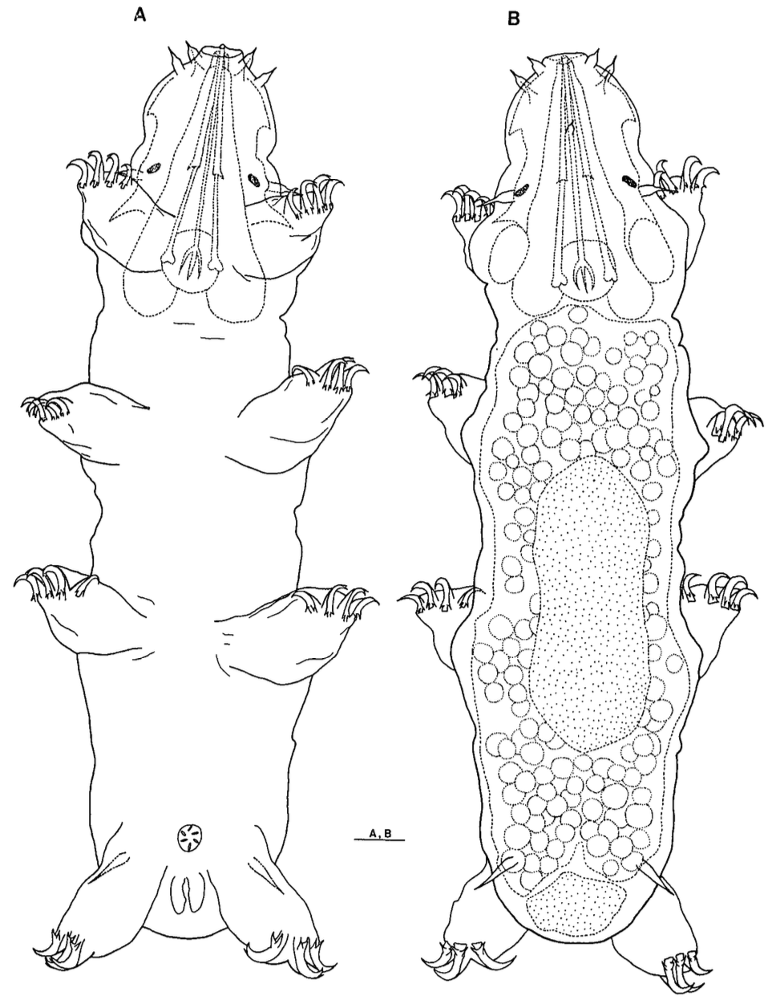

Anisonyches deliquus
Heterotardigrada · Arthrotardigrada · Anisonychidae · Anisonyches

Figure — Anisonyches deliquus Chang & Rho, 1998. Female habitus, ventral (A) and dorsal (B) views. Reproduced from Chang & Rho (1998), Fig. 1.
Identification
Diagnostic characteristics useful for distinguishing Anisonyches deliquus from other tardigrades.
| Character | State |
|---|---|
| Environment | Marine |
| Segmentation | Absent |
| Plates | Absent |
| Eyes | Present |
| Clavae | Absent |
| Legs I–III | 4 claws |
| Leg IV | 3 claws |
| Claw accessory points | Present |
| Sensory spines / papillae | Absent |
| Leg spines / papillae | Absent |
Legs I–III possess four claws, while leg IV possesses three. Clavae and sensory spines or papillae are absent.
Ecology & Distribution
| Habitat | Intertidal to shallow sublittoral |
|---|---|
| Substrate | Coralline sand bottoms |
| Depth | 1–5 m |
| Known locality | Santa Cruz Island, Mindanao, Philippines |
Morphology
Measurements
| Character | Measurement | Material |
|---|---|---|
| Body length | 141 µm | Holotype |
| Body width | 40.1 µm | Holotype |
| Buccal tube | 32.1 µm | Holotype |
| Pharyngeal bulb | 9.4 × 9.5 µm | Holotype |
| Stylets with sheaths | 35 µm | Holotype |
| Median cephalic cirrus | 2.4 µm | Holotype |
| Internal cirri | 3.2 µm | Holotype |
| External cirri | 4.2 µm | Holotype |
| Lateral cirri | 5.8 µm | Holotype |
| Cirrus E | 7.7 µm | Holotype |
| Gonopore | 4 µm diameter | Holotype |
| Gonopore–anus distance | 8.6 µm | Holotype |
Color & Cuticle
Color
Cuticle is transparent or yellowish.
Cuticle
Smooth, with no plates or dots.
Eyes
Eye spots black.
Bucco-pharyngeal apparatus
- Mouth subterminal and protruding, with telescopic division.
- Buccal tube very long and narrow (32.1 µm).
- Pharyngeal bulb small and spherical (9.4 × 9.5 µm).
- Three short placoids (≈5 µm).
- Stylets with sheaths 35 µm long, ending in piercing tips.
- Stylet supports absent.
Plates
- Plates absent.
- Anus covered by two large lateral plates.
Appendages
Head
- Median cephalic cirrus: 2.4 µm.
- Internal cirri: 3.2 µm.
- External cirri: 4.2 µm.
- Lateral cirri: 5.8 µm.
- Primary and secondary clavae absent.
Dorsal
- Cirrus E relatively long (7.7 µm).
- Located just above leg IV.
- Bases simple, without peduncles or accordion-like structures.
Legs & Claws
Legs
Stubby and non-telescopic, lacking spines or papillae. Claws attach directly to the leg without toes.
Claws
- Legs I–III with four claws.
- The two middle claws are larger and have an apical accessory point.
- Basal spurs stout and slightly curved.
- Leg IV with three claws.
- The inner two claws are slightly larger and also have accessory points.
Reproduction
Gonopore
Female gonopore relatively large (4 µm diameter), located just in front of leg IV and surrounded by six small membranes.
Gonopore–anus distance: 8.6 µm.
Eggs
Not reported.
Molecular Data
No DNA or GenBank information currently available.
Taxonomic Notes
The authors compared Anisonyches deliquus with A. mauritianus and other species of Anisonyches based particularly on claw morphology.
A. deliquus can be distinguished from A. mauritianus by the absence of sensory spines or papillae on all leg pairs and by its less protruding head. The absence of clavae also distinguishes it from other species of Anisonyches discussed by the authors.
References
Primary description
Chang CY, Rho HS. 1998. Two marine tardigrade species of genus Anisonyches (Heterotardigrada: Echiniscoididae) from Mindanao, the Philippines. Korean Journal of Systematic Zoology. 14(2):91–98.
Taxonomic database
World Register of Marine Species. 2026. Anisonyches deliquus Chang & Rho, 1998. WoRMS taxon details [Internet]. [accessed 2026 Aug 17]. Available from: World Register of Marine Species .
Current taxonomic checklist
Degma P, Guidetti R. 2026. Actual checklist of Tardigrada species. 45th ed. [Internet]. [accessed 2026 Aug 17]. Available from: https://doi.org/10.5281/zenodo.20746849